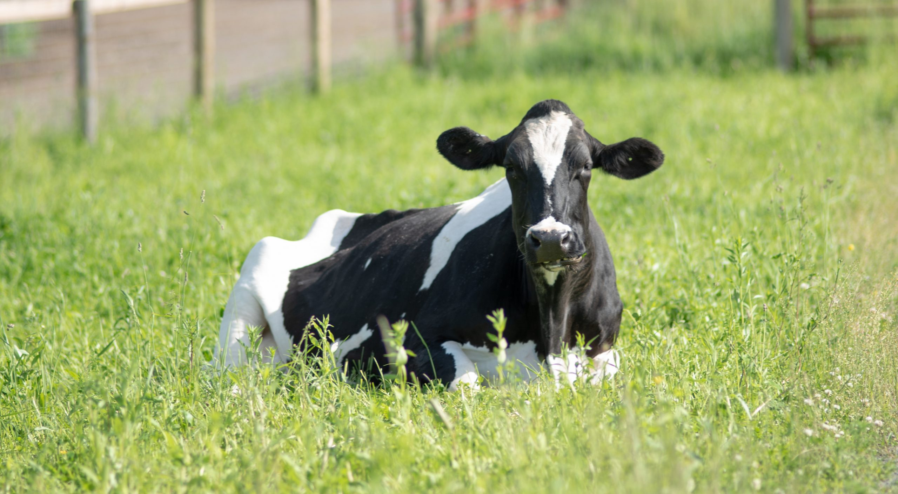
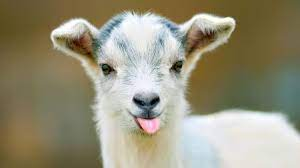
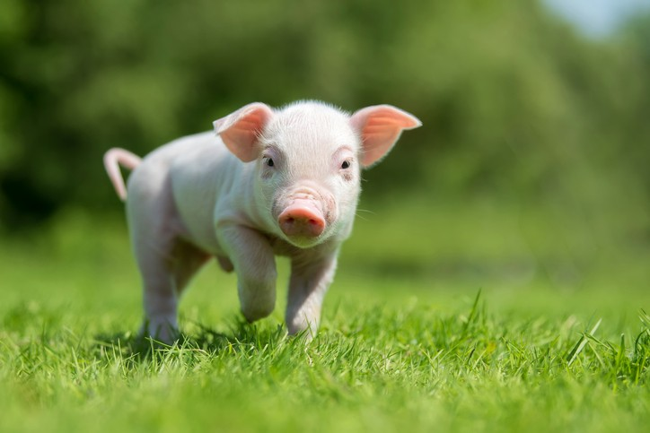

1.Dog
The domestic dog (Canis familiaris or Canis lupus familiaris is a domesticated descendant of the wolf. The dog derived from an ancient, extinct wolf,and the modern grey wolf is the dog's nearest living relative.The dog was the first species to be domesticated,by hunter–gatherers over 15,000 years ago,before the development of agriculture.Their long association with humans has led dogs to be uniquely adapted to human behavior,leading to a large number of domestic individuals and the ability to thrive on a starch-rich diet that would be inadequate for other canids. The dog has been selectively bred over millennia for various behaviors, sensory capabilities, and physical attributes.Dog breeds vary widely in shape, size, and color. They perform many roles for humans, such as hunting, herding, pulling loads, protection, assisting police and the military, companionship, therapy, and aiding disabled people. This influence on human society has given them the sobriquet of "man's best friend."

Click on the image for the sound
2.Cow
Cattle, or cows (female) and bulls (male), are large domesticated cloven-hooved herbivores. They are a prominent modern member of the subfamily Bovinae, are the most widespread species of the genus Bos, and are most commonly classified collectively as Bos taurus. Cattle are commonly raised as livestock for meat (beef or veal, see beef cattle), for milk (see dairy cattle), and for hides, which are used to make leather. They are used as riding animals and draft animals (oxen or bullocks, which pull carts, plows and other implements). Another product of cattle is their dung, which can be used to create manure or fuel. In some regions, such as parts of India, cattle have significant religious meaning. Cattle, mostly small breeds such as the Miniature Zebu, are also kept as pets.
Click on the image for the sound
3.Goat
The domestic goat or simply goat (Capra aegagrus hircus) is a subspecies of C. aegagrus domesticated from the wild goat of Southwest Asia and Eastern Europe. The goat is a member of the animal family Bovidae and the subfamily Caprinae, meaning it is closely related to the sheep. There are over 300 distinct breeds of goat.It is one of the oldest domesticated species of animal, according to archaeological evidence that its earliest domestication occurred in Iran at 10,000 calibrated calendar years ago. Goat-herding is an ancient tradition that is still important in places like Egypt. Goats have been used for milk, meat, fur, and skins across much of the world.Milk from goats is often turned into goat cheese. Female goats are referred to as does or nannies, intact males are called bucks or billies, and juvenile goats of both sexes are called kids. Castrated males are called wethers. While the words hircine and caprine both refer to anything having a goat-like quality, hircine is used most often to emphasize the distinct smell of domestic goats.
Click on the image for the sound
4.Pig
A pig is any of the animals in the genus Sus, within the even-toed ungulate family Suidae. Pigs include domestic pigs and their ancestor, the common Eurasian wild boar (Sus scrofa), along with other species. Pigs, like all suids, are native to the Eurasian and African continents, ranging from Europe to the Pacific islands. Suids other than the pig are the babirusa of Indonesia, the pygmy hog of South Asia, the warthog of Africa, and other pig genera from Africa. The suids are a sister clade to peccaries. Juvenile pigs are known as piglets. Pigs are highly social and intelligent animals. With around 1 billion individuals alive at any time, the domestic pig is among the most populous large mammals in the world.Pigs are omnivores and can consume a wide range of food.Pigs are biologically similar to humans and are thus frequently used for human medical research.
Click on the image for the sound
5.Cat
The cat (Felis catus) is a domestic species of small carnivorous mammal.It is the only domesticated species in the family Felidae and is often referred to as the domestic cat to distinguish it from the wild members of the family.A cat can either be a house cat, a farm cat or a feral cat; the latter ranges freely and avoids human contact.Domestic cats are valued by humans for companionship and their ability to hunt rodents. About 60 cat breeds are recognized by various cat registries. The cat is similar in anatomy to the other felid species: it has a strong flexible body, quick reflexes, sharp teeth and retractable claws adapted to killing small prey. Its night vision and sense of smell are well developed. Cat communication includes vocalizations like meowing, purring, trilling, hissing, growling and grunting as well as cat-specific body language. A predator that is most active at dawn and dusk (crepuscular), the cat is a solitary hunter but a social species. It can hear sounds too faint or too high in frequency for human ears, such as those made by mice and other small mammals.It secretes and perceives pheromones.

Click on the image for the sound